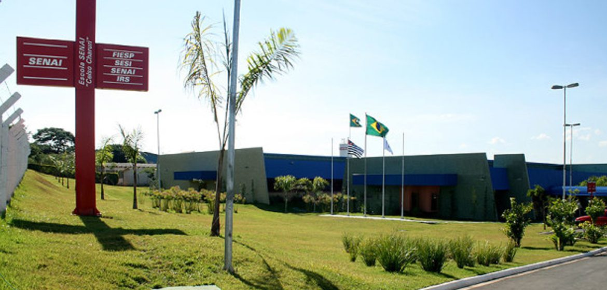

Autores:
Para mais informações sobre a Semana do meio ambiente, entre em contato conosco:
Email: guafonso2402@gmail.com
Telefone: (19) 99788-8262
Endereço: Avenida Rebouças Escola SENAI "Dr. Celso Charuri"

Email: guafonso2402@gmail.com
Telefone: (19) 99788-8262
Endereço: Avenida Rebouças Escola SENAI "Dr. Celso Charuri"